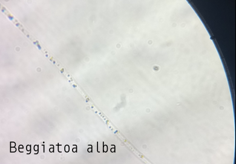

-

Oscillatoria princeps
Trichome (filamentous structure) lacks heterocysts; with equal diameter throughout whole length; no hair-like structure; no branching, no mucous sheath; straight, long, consisting of numerous cells 16-60 μm (usually 40-50 μm) in diam., 3.5-7 μm long.
Kingdom: Bacteria
Phylum: Cyanobacteria
Class: Cyanophyceae
Order: Oscillatoriales
Family: Oscillatoriaceae
-

Beggiatoa alba
Strains of colorless, filamentous, gliding bacteria, visible to the naked eye, exhibit great diversity in size ranging from about 3.0 to 5.0 μm in diameter. Due to its ability to detoxify sulfide, this microbe plays a huge role in the sulfur cycle of coastal environments.
Kingdom: Bacteria
Phylum: Proteobacteria
Class: Gammaproteobacteria
Order: Thiotrichales
Family: Thiotrichaceae
-
Nostoc commune
Nostoc commune is a colonial species of cyanobacterium. It initially forms a small, hollow gelatinous globule which grows and becomes leathery, flattened and convoluted, forming a gelatinous mass with other colonies growing nearby. Inside the thin sheath are numerous unbranched hair-like structures called trichomes formed of short cells in a string. The cells are bacteria and thus have no nucleus nor internal membrane system. To multiply, they form two new cells when they divide by binary fission. Along the trichomes, larger specialist nitrogen-fixing cells called heterocysts occur between the ordinary cells. When wet, Nostoc commune is bluish-green, olive green or brown but in dry conditions it becomes an inconspicuous, crisp brownish mat.
Kingdom: Bacteria
Phylum: Cyanobacteria
Class: Cyanophyceae
Order: Nostocales
Family: Nostocaceae